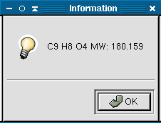

This tool will calculate the empirical formula and molecular mass for the current molecule. To use this tool right click on the view, select compute from the popup menu and then select Formula. This will open a dialog box that contains this information.
Clicking Ok will close the dialog box.